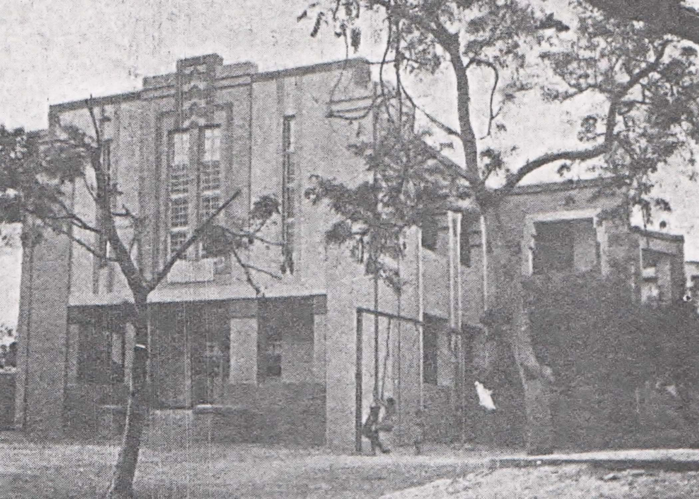
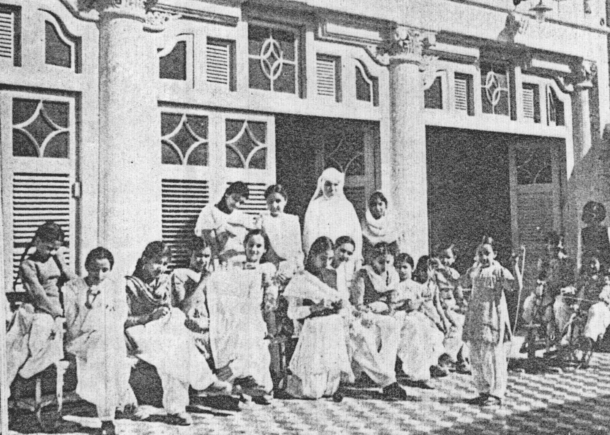

A BRIEF HISTORY OF ST. MARY'S
Having been established in 26th April, 1937, our history is quite interesting. Franciscan Sisters came to take over a small primary school with 50 children started by the Franciscan Fathers (ofm) in the Parish hall and two verandas. It was functioning as St. Bonaventure's co-education. All of these children from the leading families were taken care of by the sisters till class five. In 1944 the number of boys had increased so much, that it was decided to separate them and have a girls' school which was started and named St. Mary's Girls School.
There were only 286 Hindu girls and 87 Muslim girls in 1947. At the time of independence in 1947 the number of students was reduced due to mass migration of Hindu families from Hyderabad.
It was a worry some time for the sisters as in a few days the number of students was reduced from 347 students only 80.
In the following years a few Muslim girls came and slowly it came to increase.
The enrollment was back to normal. In 1950, the pupils were 450 in St. Mary's High School.
In 1951, the school was registered as a higher secondary school named Nazareth College and first year classes started. The college classes were 9th ,10th, 11th & 12th. Mother Teresa Redentore was the Principal who had the courage to meet the needs of the time as girls wanted to stay and study in St. Mary's only.
The building was extended and more classrooms were made.
The first year, the students in intermediate class were only 20. In 1952 there were 43 admissions and in 1954 there were 56. Over the years building was extended as the number of students increased.
St. Mary's school was nationalized in 1972 and remained under the Government till 1992. The Ethos of our school was changed in 20 years of nationalization time. The classes were filled with 90/100 students.
It was the tireless struggle of Sr. Philomena Harris to get the school back from the Government. She worked hard, making every effort to provide quality education to our girls as it was before when the sisters were incharge.
 After her committed services from 1993 to 2000, she handed over to Sr. Catherine Gill, who is continuing to follow the traditions of her predecessors.